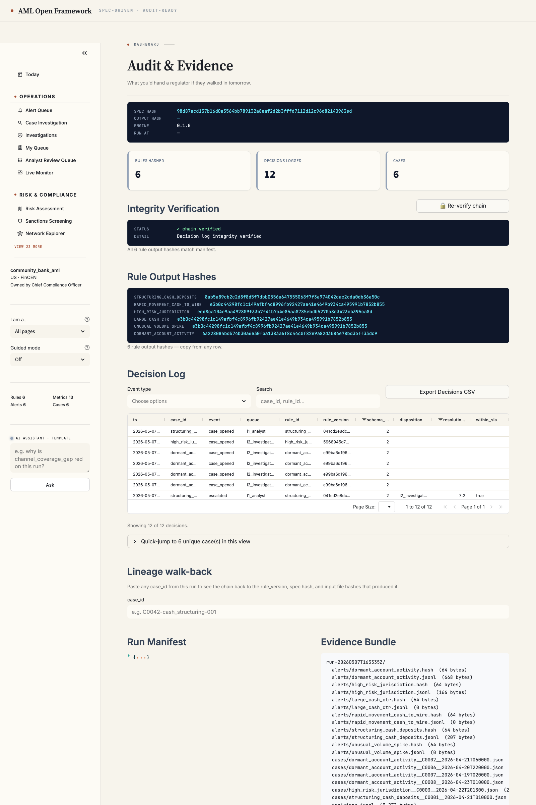
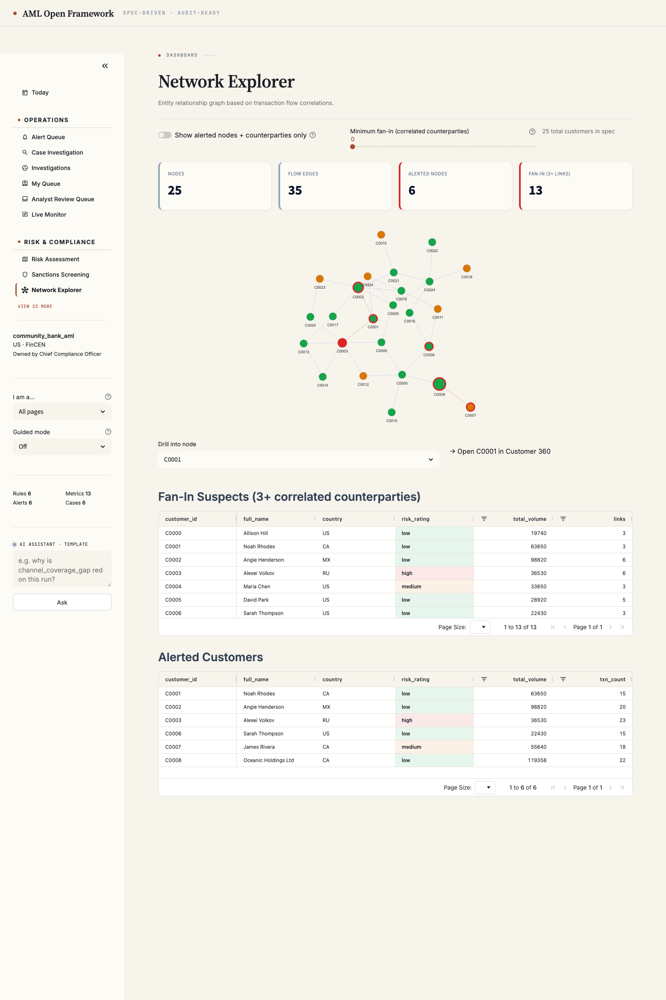
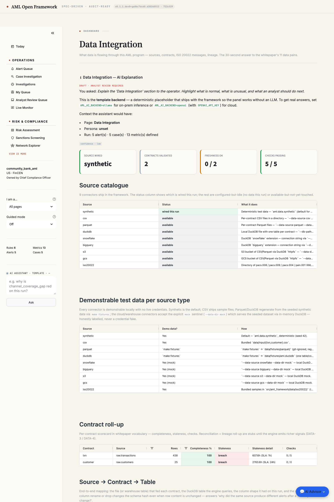

page 0 · today

Today · persona-aware open-of-day cards. Click anywhere → drills to the page that answers it.
page 3 · alert queue

Alert Queue · row-click drill-through to Case Investigation. Severity / RAG cell colouring from a single token source.
page 4 · case investigation

Case Investigation · entity profile + Why-this-fired + transaction timeline + Sankey + STR draft + filing actions.
page 7 · audit & evidence

Audit & Evidence · the auditor's read. Hash-verified rule outputs + lineage walk-back + decision log.
page 10 · network explorer

Network Explorer · ego-network walks for component-size and shared-attribute typologies. Mermaid graph rendered live.
page 30 · data integration

Data Integration · 9 connectors · source → contract → DuckDB table mapping · DATA-N → artifact map.